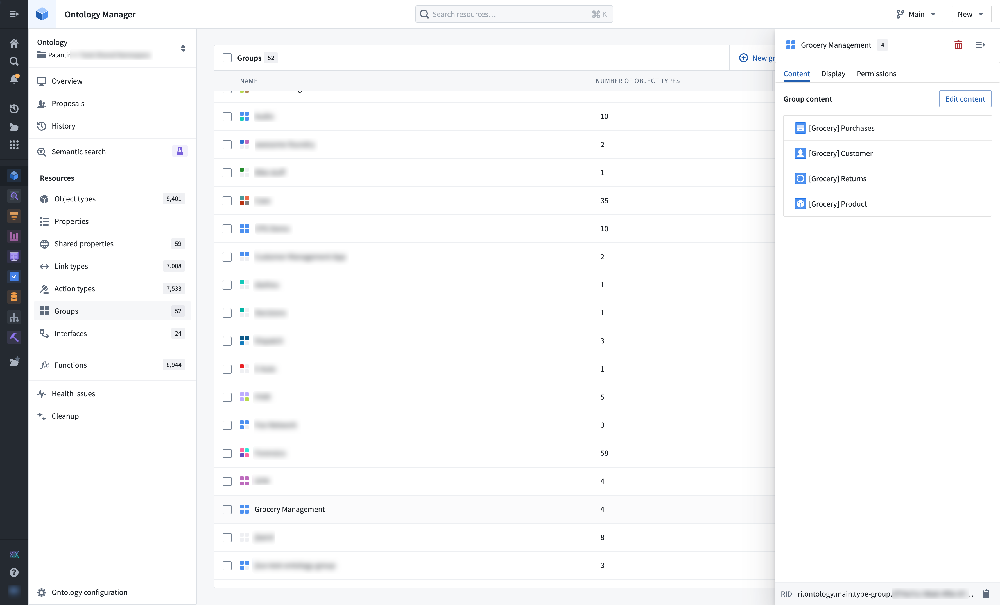
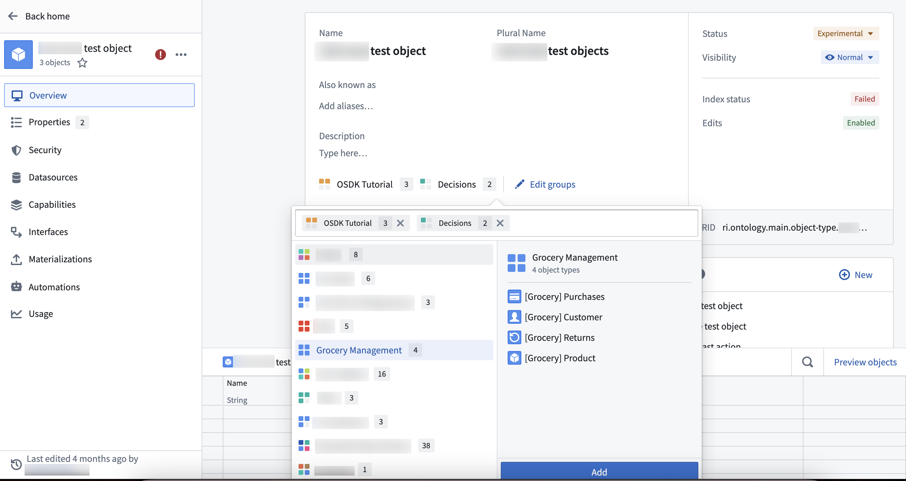
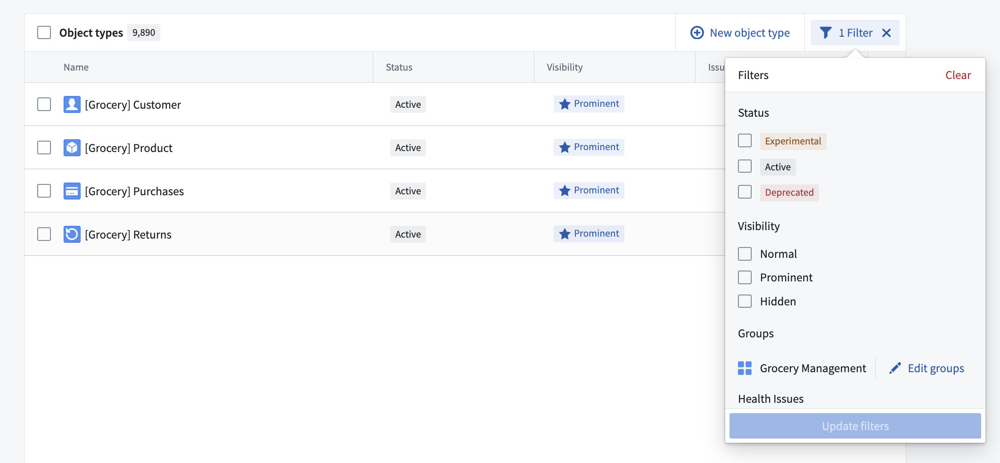

Object type groups are a classification primitive that help users better search and explore their ontology. Groups are created and managed using Ontology Manager, generally by ontology owners and editors.
Groups are created and managed via the groups menu, accessible in the Ontology Manager sidebar.

Groups can also be added directly to object types by selecting Edit groups in the object type overview page.

Groups are searchable in Ontology Manager's Search bar and Search bar dialog. The table of object types in Ontology Manager supports displaying and filtering by group. Groups are also displayed on the Object Explorer home page.

To view object type groups, users must have viewer permission on the project that the object type group is in.
As of May 22, 2024, the group primitive described on this page has replaced the tag-based system of legacy groups.
In most cases, legacy groups were automatically migrated to object type groups at this time. Ontology owners were notified via an Upgrade Assistant intervention if manual action was necessary.
Previously, if all object types inside a group were non-discoverable to a certain user (for example, due to access controls on backing datasets), the group was also non-discoverable to the user. As mentioned in the section above on group permissions, all groups will now be discoverable to any user that can view the ontology. This change aligns group visibility with other ontology primitives to increase clarity and transparency in governance.
Legacy groups that were not discoverable to one or more users were not eligible for automatic migration. In these cases, ontology owners were notified via an Upgrade Assistant intervention that manual action was necessary.
On May 22 2024, legacy groups that could not be safely migrated were hidden from operational users across all applications such as Workshop and Object Explorer. To provide backward compatibility, the names of legacy groups remain stored as type class metadata on object types.
Ontology owners may continue to manually migrate these hidden, legacy groups using Ontology Manager. To do this, navigate to the Ontology Configuration menu in the bottom left corner and select Approve all Groups for migration.